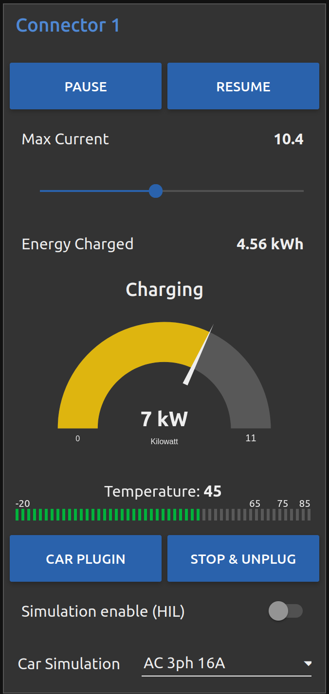

3. A Kind Of Quick Guide To EVerest¶
3.1. Prepare Your Development Environment¶
3.1.1. Needed Packages¶
You will need Python, Jinja2, PyYAML, a compiler and some more system libraries set up. If not already done, see the detailed page for setting up your development environment.
After having created your environment, we can go on downloading and installing EVerest.
3.2. Download And Install¶
3.2.1. Get The Needed EVerest Repositories¶
3.2.1.1. EVerest Dependency Manager - edm¶
As EVerest is highly modular, you will need multiple repos, which can be found on GitHub.
To get the right repos as needed, the EVerest Dependency Manager - short edm - will help you.
To start with that, let’s get edm ready to work.
You will first of all need to pull everest-dev-environment to your development environment.
Python and its tools pip, setuptools and wheel have already been installed in the Prerequisites section above. So, you can pull the said repository and install the dependency manager, which will reside inside of .local/bin/ in your HOME directory:
git clone https://github.com/EVerest/everest-dev-environment
cd everest-dev-environment/dependency_manager
python3 -m pip install .
The EVerest dependency manager uses CPM for its CMake integration. This means you can and should set the CPM_SOURCE_CACHE environment variable. This makes sure that dependencies that you do not manage in the workspace are not re-downloaded multiple times. For detailed information and other useful environment variables please refer to the CPM Documentation.
Also set the PATH variable:
export CPM_SOURCE_CACHE=$HOME/.cache/CPM
export PATH=$PATH:/home/$(whoami)/.local/bin
To let edm prepare the most common repos for a simple start with EVerest, let us use a default config file and set a workspace directory for the repos. Set your preferred directory instead of {EVerest Workspace Directory}, e.g. use ~/checkout/everest-workspace.
edm init --workspace {EVerest Workspace Directory}
(In future, as your system has edm properly set up, you can always initialise a new workspace by calling edm init.)
edm will now prepare the most common repos to start with. It will also create a YAML file which describes your newly created workspace. You can change that YAML file later if you want to adopt the workspace to another scenario.
The YAML file can be found in the directory which you have chosen as workspace directory. In the above example, it is located at {EVerest Workspace Directory}.
More details about edm, see the dedicated edm page in this documentation.
Note
If you want EVerest to pull its own dependencies (which is recommended), remove all folders in {EVerest Workspace Directory} except for everest-core, everest-dev-environment, everest-utils and Josev. Those will be needed later on.
Doing this ensures that during the compilation of everest-core all dependencies are downloaded automatically.
3.2.1.2. EVerest Command Line Interface: ev-cli¶
In its current version, ev-cli supports you by generating module templates.
It is also necessary to build EVerest.
Note
The latter one is already satisfied by an automatic installation in a python venv during the build process. To use this installation also for generating module files you can source it as explained here.
To install it manually run:
cd {EVerest Workspace Directory}/everest-utils/ev-dev-tools
python3 -m pip install .
That is all to install ev-cli. You can find the binary file in your
HOME directory in .local/bin/.
In a later step, we will use ev-cli to create module stubs.
3.2.2. Build EVerest¶
Now it is time to build EVerest:
cd {EVerest Workspace Directory}/everest-core
mkdir build
cd build
cmake ..
make install
Hint
In case you have more than one CPU core and more RAM availble you can use the following command to significantly speed up the build process:
make -j$(nproc) install
$(nproc) puts out the core count of your machine, so it is using all available CPU cores. You can also specify any number of CPU cores you like.
edm helped you to keep it that simple. Let’s now dive into simulating our current workspace.
If you get an error during the build process stating that ev-cli is installed in an old version, go to your everest workspace directory and call edm –git-pull. This will update the EVerest repositories. After that, repeat building ev-cli and you should be good to go again.
Hint
This error shouldn’t occur if ev-cli is installed automatically during the build process.
It is highly recommended to always use the automatic installed ev-cli version, since this
is specified by the dependencies.yaml and verified by ci workflow.
3.3. Simulating EVerest¶
3.3.1. Prepare The Helpers¶
EVerest comes with prepared Docker containers. The one that starts Mosquitto (an MQTT broker) is required to run EVerest. This documentation section shows the necessary steps to start the simulation and get the user interface running.
Further tools are not required to run EVerest (e.g. SteVe for OCPP). Further information about EVerest Docker containers can be found on the EVerest Docker Setup page.
Hint
To get all this working, make sure you have docker and docker-compose installed during the previous install phase. (If not, see install instructions for docker and docker-compose!)
In order for custom or local containers being able to talk to the services, provided by the docker-compose containers, we need to create a common docker network. It is called infranet_network and needs to be created by the following command (IPv6 is enabled for containers which might need it):
docker network create --driver bridge --ipv6 --subnet fd00::/80 infranet_network --attachable
Now, start the mosquitto broker, which is deployed as built docker image. It is used for the communication between the EVerest modules:
docker run -d --name mqtt-server --network infranet_network -p 1883:1883 -p 9001:9001 ghcr.io/everest/everest-dev-environment/mosquitto:docker-images-v0.1.0
-d starts the container in detached mode.
--name mqtt-server gives the container a name.
--network infranet_network connects the container to the network we created.
--expose 1883 --expose 9001 makes the ports 1883 and 9001 available to the
other containers in the network.
ghcr.io/everest/everest-dev-environment/mosquitto:docker-images-v0.1.0 is the complete image name
Note
The docker container can be controlled with docker compose as well:
cd {EVerest Workspace Directory}
git clone https://github.com/EVerest/everest-dev-environment.git
cd everest-dev-environment/docker
docker compose up -d mosquitto
That makes us ready for entering the simulation phase described in the next chapter.
3.3.2. Software in a loop¶
In the following, we will start EVerest as a simple AC charging station with software-in-the-loop configuration. This means that all hardware related parts like Powermeter, RFID-Reader or even actual Electric Vehicles are loaded as simulated modules.
Hint
Make sure you have prepared the helpers necessary for simulating EVerest as shown in the previous section.
Change to the directory everest-core/build, which has been created during EVerest install.
Start EVerest with a software-in-the-loop configuration via script:
{EVerest Workspace Directory}/everest-core/build/run-scripts/run-sil.sh
In a new terminal window, run the following Node-RED script. If you are not logged in as root, you will need to run this via sudo:
{EVerest Workspace Directory}/everest-core/build/run-scripts/nodered-sil.sh
For a user interface, just direct your browser to http://localhost:1880/ui - the required web-server has already been started via the shell scripts.
This will let us control the simulation in a very simple GUI.
You can analyse the output of the two shell scripts in the terminal windows to get a little bit of insights about what is going on and which ports are used etc.
In the GUI, you can simulate car charging sessions using the available buttons, e.g. CAR PLUGIN, PAUSE, RESUME and so on:
{kind=link}
Having a very first basic feeling for that will be enough for now. We are preparing a module tutorial, in which we will dig deeper into things.
3.3.3. Admin panel and simulations¶
Important
Be aware, that the Admin Panel is currently under development. The former version of the Admin Panel, which was integrated in EVerest, will be removed. See the new standalone version which runs without an EVerest instance here: Admin Panel GitHub repository .
You can glue together the modules of EVerest (and also your custom ones) with the help of EVerest’s framework mechanisms. This way, you define simulation flows with which you can test and analyze complicated systems.
As EVerest is a modular framework, you can define connections and data flows in a nice network of modules. As it would be a little bit exhausting to configure everything via code or config files, there is a nice helper: The admin panel.
It gives you an overview of modules and connections between them. In a diagram, you can see and understand the simulation with all interfaces, configs, data flows and so on.
Note
See Admin Panel GitHub repository for information about how to start the Admin Panel. The screenshots and the documentation in this subsection might be different than what you see on your screen. This is due to the currently ongoing changes in the Admin Panel. This will be updated soon.
You should see a rather empty page like that:

Click on the menu symbol on the upper left corner of the page, then click on config. A left side column with further menu items opens. Choose Available configs:

If you are here for the first time, you will see all pre-configured Node-RED flows here. For a first intro, you may want to take a look at config-sil.
After opening it, you can see a diagram representation of some modules with connections between them.
The role of each module in this system and how to configure an EVerest module environment with the Admin Panel will be explained on page EVerest Modules.
To see how to create your own custom flows for simulations, visit the Tutorial for simulating EVerest.
Next, let’s see how fast we can create a new module in EVerest.
3.4. Understanding EVerest Modules¶
You reached the phase of writing a new EVerest module. Congrats!
For this Quick Start Guide, we will give you a rocket start of understanding the basic elements of the EVerest module concept.
Note
Modules can be implemented in C++, Javascript, Python or Rust. We will stick to C++ in the examples below.
So, let’s dig into the overview:
EVerest is a modular framework. So, there are lots of modules for different entities in an EVerest workspace:
EvseManager (a charging port as part of a charging station)
Hardware driver modules
Protocol implementations
Car simulation modules
Authentication modules
Energy management modules
and so on.
Of course, you can change the functionality of those modules or add your custom ones to the whole module stack.
In very short terms, a new module will be created by describing its structure via manifest and interface files. After that, an EVerest helper tool will create the necessary files as stub files, so that you can implement the details. The EVerest framework will also know how the modules can be connected by the restrictions you set in the manifest.
How does all that look like? Read the next section!
3.4.1. Basic elements of a module¶
3.4.1.1. Module manifest¶
Let’s look at the first step: Describing the structure of a new module. Starting with the manifest file, which could look like this:
1description: Describing what this module does.
2config:
3 some_key:
4 description: Describe the effect of this config key.
5 type: boolean
6 default: false
7provides:
8 main:
9 interface: myinterface
10 description: Describe what the implementation of this interface does.
11requires:
12 some_implementation:
13 interface: externalinterface
14 min_connections: 0
15 max_connections: 2
16enable_external_mqtt: true
17metadata:
18 license: https://spdx.org/licenses/Apache-2.0.html
19 authors:
20 - Your name, your company
Most of this should be self-explanatory. Just a few words:
The config section gives you the possbility to define some config keys for the module to re-use it for different scenarios in your workspace.
In line 7, the provides section let’s you tell other modules what your module is able to do. You tell the EVerest module framework which interfaces have been implemented - for example, a power meter. Of course, you can implement more than only one interface and list all of that in the provides section.
Line 11 starts with the requirements of your own module. This is the other side: Your module tells the EVerest module framework which implementations it will require to work in the EVerest workspace.
With the min_connections and max_connections key you can configure how many connections are required or allowed for your module.
In EVerest, you find a manifest file for each module. See the module directories in {EVerest Workspace Directory}/everest-core/modules.
3.4.1.2. Interfaces¶
An interface describes - like a kind of construction manual - which information it delivers and which functionality it provides for other modules to use.
A module, that implements an interface, publishes information via VARs (short for variables). VARs can be consumed by connected modules. Functionality is provided by CMDs (commands, that can be called from other modules).
VARs and CMDs are defined in the interface files. Remember the manifest file? The previous section showd that the manifest file defines which interfaces your module implements. Those interfaces could already exist. If not, you would have to create a new one.
You can find all interfaces in the directory {EVerest Workspace Directory}/everest-core/interfaces as yaml files.
An easy one as an example:
1description: Describe why we need this interface.
2cmds:
3 get_id:
4 description: Describe what this command does when called.
5 arguments:
6 verbose:
7 description: An example for a method argument.
8 type: boolean
9 result:
10 description: Explain the return value.
11 type: integer
12vars:
13 temperature:
14 description: Describe this value that gets published.
15 type: integer
16 limits:
17 description: Describe this struct that gets published.
18 $ref: /typedef#/Limits
A short interface file, but lots to learn here:
You can see one CMD defined, which has the name get_id. If you want to implement this interface (and provide the functionality of the interface to other modules), this is the method you will have to fill with code in your implementation later.
There is one argument defined for the method called verbose. A return value of type integer rounds things up for the one CMD of this interface.
VARs are pieces of information which get published for the network of listening modules regularly. We have two VARs in this example. The first one is of type integer, the second one is a reference to a type definition.
This way, you can create structs or classes (however you would call a bunch of simple data-types grouped inside of one logical unit) for publishing.
Note
In some yaml interface files in the EVerest GitHub project, you will still find an additional type attribute besides a $ref attribute. In most cases, the type will be of value object. This is considered bad practice and will be deprecated in future versions.
Let’s have a look at a type definition in the next section.
3.4.1.3. Types¶
As you have seen in the example interface yaml, you can use types instead of simple data entities (like boolean, string, integer and so on).
In the interface, you saw a reference to an EVerest type definition.
You can find the type definitions as yaml files in the following directory:
{EVerest Workspace Directory}/everest-core/types
An easy definition of a type could look like this:
1description: Describe which group of types will follow.
2types:
3 SomeType:
4 description: Describe this type.
5 type: object
6 additionalProperties: false
7 properties:
8 property_1:
9 description: Describe the first property.
10 type: boolean
11 property_2:
12 description: Describe the second property.
13 type: number
You can see one defined type here. It has two properties. A property could again be another type reference.
Now, as we have defined everything, it is time to let the EVerest command line interface - the ev-cli tool - generate the implementation stubs.
3.4.2. Generate the stub files¶
Your main cpp file will have two special functions:
void MyModuleName::init() {}
void MyModuleName::ready() {}
When initialising, the EVerest framework will call all init() functions of all modules one after the other. After having initialised all modules in that way, the framework calls the ready() functions.
This allows you to do setup things that relate only to your current module in the init() function and all stuff requiring other modules being initialised in your ready() function.
Furthermore, you will get generated files for all interfaces that you declared to be implemented in your module. Those interface files will contain handler methods for the CMDs you have declared in the interface files.
You can walk through the generated files in your new module directory and have a look at the prepared classes.
3.5. One Deep Breath And Next Steps¶
You made it. Great!
Probably, now is a good time to take a deep breath and review what you have learnt about EVerest.
You might have generated stub files now but still are not sure how to procede with implementing your specific scenarios?
Good news: A tutorial about developing EVerest modules is waiting for you.
Continue with the tutorial here!
Or - if you rather would like to have more theoretical input about EVerest modules - continue with the EVerest Module Concept page.
See you in our weekly tech meetings and thanks for being a part of the EVerest community!